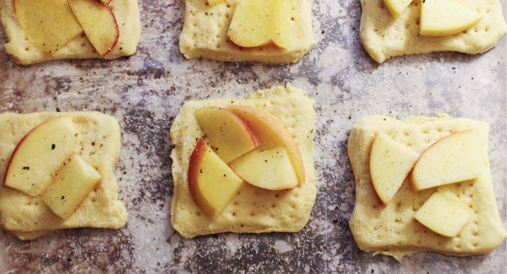
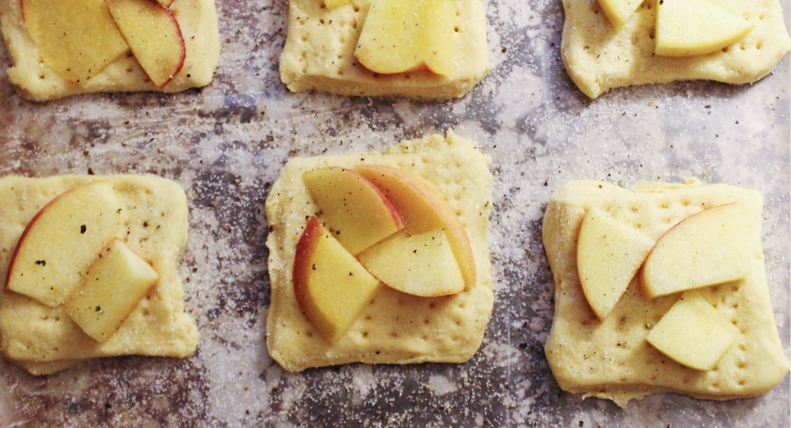

peach tarts with goat cheese and honey
 


ingredients
- 1 sheet frozen puff pastry (14-oz.), thawed
- 1 lb ripe, sweet peaches, pitted and cut into ½ inch wedges
- 4 oz. goat cheese, softened
- 2 tablespoons honey
- freshly ground black pepper
preparation
- 1. preheat oven to 425 degrees. Line a baking sheet
with parchment paper
2. cut pastry into six 4 inch squares and place on prepared baking sheet. prick each square all over with a fork.
3. spread each square with a spoonful of goat cheese, leaving about a ½ inch border. top each square with peaches. season with a few grinds of black pepper.
4. bake for 20 to 25 minutes, rotating the pan halfway through, or until the pastry is puffed and golden and the peaches are soft. drizzle with honey just before serving